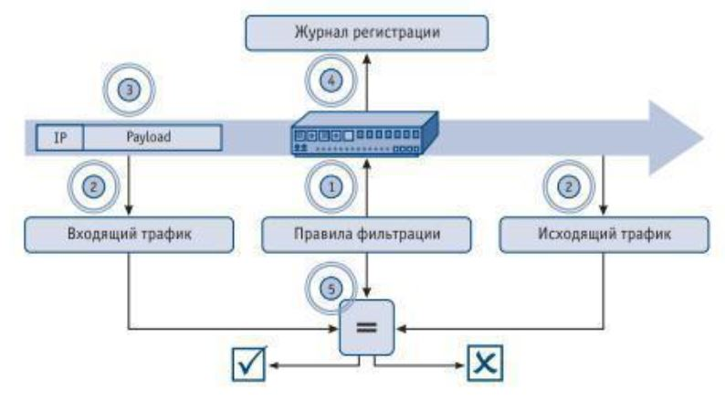

Цель работы: научиться составлять комплексную методику испытаний системы защиты, для выявления недоработок спроектированной системы защиты.
Теоретическая часть
В соответствии с «Доктриной информационной безопасности Российской Федерации» обеспечение безопасности информационных ресурсов от несанкционированного доступа представляет собой одну из составляющих национальных интересов России в информационной сфере. Это определяет необходимость выполнения специальных действий по оценке соответствия средств защиты информации от несанкционированного доступа, используемых при построении автоматизированных систем (АС), требованиям нормативных и иных документов по защите информации. В данной статье рассматриваются инструментальные средства и методы, которые могут быть использованы при проведении функционального тестирования систем и комплексов защиты по требованиям безопасности информации в соответствии с требованиями руководящих документов
Понятие и цели управления Как известно, руководящий документ (РД) «Средства вычислительной техники. Защита от несанкционированного доступа к информации. Показатели защищенности от несанкционированного доступа к информации» (Гостехкомиссия России, 1992) устанавливает 7 классов защищенности средств защиты информации (СЗИ) от несанкционированного доступа (НСД) на базе перечня показателей защищенности и совокупности описывающих их требований. Рассмотрим общий порядок проведения испытаний СЗИ от НСД на соответствие требованиям РД, предъявляемым к дискреционному принципу контроля доступа, а также к механизму очистки внешней памяти.
- Порядок проведения данной проверки в общем случае выглядит следующим образом
- Создание тестовых субъектов
- Настройка правил разграничения доступа субъектов испытываемого СЗИ от НСД к тестовым защищаемым объектам.
- Тестирование фактического наличия права rkу субъекта Sj по отношению к объекту Oj(тестирование настроек СЗИ от НСД).
- Сравнение фактических правдоступа с требуемыми правами, определенными в матрице доступа.
Службой безопасности, совместно с отделом информационных технологий, должна быть разработана политика защиты компьютерной сети средствами канального уровня, определяющая допустимые маршруты передачи кадров канального уровня. Разработанная политика должна запрещать связи типа «один-ко-многим», не обоснованные требованиями информационной поддержки деятельности предприятия. Политикой также должны быть определены рабочие места, с которых разрешено конфигурирование средств коммутации канального уровня.
Сетевой уровень
Решение проблемы очевидно – нужно использовать все адресное пространство и не дать злоумышленнику возможности захватить адреса неиспользуемых узлов. Одним из способов является применение службы мониторинга сети и поддержки виртуальных узлов в резервном диапазоне адресов. Данная служба постоянно использует свободное адресное пространство сети, создавая собственные виртуальные хосты (новые виртуальные хосты создаются сразу после отключения от сети реально функционирующих доверенных узлов). Таким образом, служба подменяет собой отсутствующие в настоящий момент рабочие станции, серверы, маршрутизаторы и т.д.
Транспортный уровень
Реализация политики защиты средствами транспортного уровня осуществляется с помощью межсетевых экранов (firewall). Межсетевой экран – это специализированное программное обеспечение, реализующее фильтрацию трафика в соответствии с правилами политики защиты сети средствами транспортного уровня. Как правило, данное программное обеспечение функционирует на платформе маршрутизатора, управляющего информационными потоками узлов различных сетей.
Прикладной уровень
Все запросы на доступ к ресурсам проходят через один или более списков контроля доступа ACL (Access Control List). ACL является набором правил доступа, которые задают для набора защищаемых ресурсов. Ресурсы с низким риском будут иметь менее строгие правила доступа, в то время как высококритичные ресурсы должны иметь более строгие правила доступа. ACL, по существу, определяют политику безопасности.
Контрольные вопросы
Назовите порядок проведения испытаний системы защиты.
- Сбор информации различными методами
- Ее анализ
- Выводы о соответствии уровня защиты
Назовите порядок разработки методики испытаний. На основании порядка проведения конкретных проверок в общем случае строится частная модель проверки для конкретной инфраструктуры предприятия.
Какой нормативный документ устанавливает 7 классов защищенности средств защиты информации? «Средства вычислительной техники. Защита от несанкционированного доступа к информации. Показатели защищенности от несанкционированного доступа к информации» (Гостехкомиссия России, 1992)
Назовите порядок тестирования функций МЭ. 
Каким рядом заметных достоинств обладает программный комплекс «Сканер-ВС»? Позволяет проводить большое количество типов проверок в соответствии с требованиями руководящих документов. Достоинства: Полнота инструментария, простота использования, сертификаты соответствия.